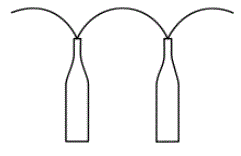

Беседа 3317 от 3877 · Беинса Дуно
Обикновен, талантлив, гениален
„Отче наш“
„Аз мога да кажа“
Имате ли някаква зададена тема? („Нямаме.“)
За следния път изберете си едно число до пет цифри, да видим всеки какво число ще изберете. Едно число от една до пет цифри.
Сега в живота, ако един човек обича само да яде, какво ще стане с него, какво ще излезе от човека? Да кажем, дава голямо значение на яденето, казва: „Всичко е в яденето.“ Друг обръща внимание на дишането, казва: „От дишането няма по-добро.“ Друг обръща внимание на пиенето, казва: „По-хубаво от пиенето няма.“ Друг обръща внимание на труда, казва: „Труд трябва.“ Друг обръща внимание на работата, казва: „Да работим.“
Да кажем, че вие обърнете внимание върху музиката. Какво ще стане от вас? Или вие обърнете внимание върху художеството. Какво ще стане от вас? Или изберете естествените науки? Запример някой път имате известно състояние. Някой път приятно ви е. Не знаете от какво произтича разположението. Има хора, които са много способни, но в края на живота си стават обикновени. Има хора, които в началото на живота си са обикновени, в края на живота си стават талантливи. Има хора, които в началото на живота си са обикновени, но в края си стават по-долу от обикновените, които седят даже по-долу от животните.
Имате думата обикновен. Колко елемента има? Тя има десет елемента. О е един елемент, Б е един елемент… Има десет (Според правописа, прилаган между 1899 и 1945 година)талантлив. Имате пак десет елемента. Конкурират се. Имате думата гениален от девет елемента. Резултатът зависи от елементите. Обикновеният човек е едно положително число. Той ще стане или генерал, или хирург, или със свредло ще работи като зъболекар. Талантливият, и той ще даде нещо. А пък гениалният, той създава. Обикновеният и талантливият, и двамата са положителни, имате двама бащи, майката я няма. Имате и един син – гениалният. Гениалният човек в края на краищата само сол ще образува, нищо повече. Ако го питате защо е тази сол, казва: „Без сол гниене се образува.“ Като дойде той, създава соли, създава сол навсякъде. Сега вие нямате обикновената сол, която спира растенето на земята. Понеже в растенето се образува един голям процес – някъде има недоимък, някъде има харчене повече, солта спира този процес на харчене, с много малко да се свърши. Човек, който много малко сила има, той [я] икономисва. Той времето не икономисва, разточителен е в своите мисли. Гениалният човек всяко нещо туря на мястото. Едно много умно дете е гениалният. Гениалният човек не е нито мъж, нито жена. Той е едно гениално дете. Ако минава за мъж, няма да бъде гениален. Ако минава за жена, пак няма да бъде гениален. Децата са гениални. Като отворят стомната, ако има вода, ще я излеят. После пак ще я напълнят. Ще я излеят, пак ще я напълнят. Той изсипва и налива, създава. Сега вас може да ви се види смешен процесът, че вземе стомната, наведе я, излее навън водата, да види каква е. Като наведе стомната, заповядва на водата да излиза. елемента – едно сложно съединение. Обикновеният човек е едно сложно съединение от десет елемента. Вие казвате: „Аз искам да бъда обикновен.“ Едно сложно съединение е. Имате
Та гениалният човек е, който създава нещата. Ти имаш известен материал, от който да създадеш нещо. Гениалността седи в мозъка на човека. На гениалния човек мозъкът е проводник на цялата природа. Всичките неща през мозъка трябва да минат. Трябва ти една глава. Трябва ти и едно сърце. В мозъка ще дойде светлината, в сърцето ще дойде топлината, а в тялото ви ще бъде силата на човека. За да създадете една мисъл, за да се прояви в мозъка ви, трябва да има светлина. За да се прояви мисълта, трябва да имате и топлина. Тогава ще се прояви и чувството. Една пълна мисъл, тя трябва да бъде светла, топла и устойчива, силна. Значи под думата силно разбираме нещо, което е устойчиво. Силни неща са, които устояват на външните условия.
Сега някои от вас не сте много паметливи. Някои от вас не разсъждавате върху нещата. Имате само повърхностни наблюдения. Запалил се огън, някой извор тече, казвате: „Тече изворът.“ Не разсъждавате защо тече. Изгрява слънцето – само констатираш факта. Залязва – пак констатираш само. Или времето се е променило. Ти констатираш факта, но защо се е променило, тебе не те интересува.
Сега, ако ви се даде една тема, как ще я развиете? Ако ви се даде темата „Защо заекът е станал заек“? Защо малкото същество, което е страхливо, жабите са по-страхливи от него? Някой ще каже, че причината за дългите уши у заека е страхът. Той, като се изправи, ослушва се и ушите му се проточили. Ами жабата, която е по-страхлива, защо няма дълги уши? Обясняват едно явление. В науката някои явления донякъде са обяснени. Този метод, този начин на обяснение не може да обясни всички явления. Казват, че има закони, които обясняват известни явления. Дойдете до едно положение, дето законът не обяснява известно явление: жабата е страхлива, но няма дълги уши. Нали знаете онзи анекдот, че заекът, като се отчаял, че е най-страхлив от всички, и си казал: „Не ми остава нищо друго, но да ида да се удавя.“ Като отишъл при езерото, като видял, че всички жаби се изпоплашили и се нахвърляли във водата, той се изправил и казал: „И от мене има по-страхливи.“ Следователно жабите спасили заека. Като излязъл заекът, като го попитали: „Защо ти се проточиха ушите?“, той не казал, че от страх, но казва: „От геройство.“ Казва: „На такива герои като мен все дълги им са ушите.“ Чуло го магарето. То тогава нямало дълги уши. Казва: „Така ли?“ И тогава на магарето му се проточили ушите. Хванали магарето за [дългите] уши и то станало посмешище на всичките работи. Кой каквото направи, казват: „Магарешка работа.“ Напил се някой, казват: „Напил се като магаре.“ Магарето никога не пие. Ако се е напил като магаре, той трябва да бъде трезвеник. Магарето никога вино не пие.
Има един анекдот. Някой си отишъл на гости на своя кръстник. Качил се на магарето си и отива при кръстника. Кръстникът го гощава. Напил се хубаво. Отива да се качи на магарето си и наместо да се качи с лице към главата на магарето, качил се с лице към опашката. Казва: „Къде отиде главата на това магаре? Бамбашка стана. По-напред вървеше напред, сега върви назад.“ Понеже той се обърнал, магарето върви назад. Казва: „Всичко назад ми върви.“ Сега казват: „Напил се като магаре.“ Магарето обича да пие доста вода. То, като тръгне, от всяка чешма вода не пие. Десет чешми ще опита и търси да пие вода от най-хубавата чешма, не пие каква да е вода. Този, който станал пиян, пил от най-хубавото вино, понеже, ако виното не беше хубаво, нямаше да се напие. Магарето, като се напие, дига глава. Пияният, като се напие, и той дига глава и тръгне по пътя. Върви от едната страна към другата на пътя и пее някаква песен.
Казвам сега, кое обичате да бъдете, обикновени хора или талантливи? Обикновеният човек създава условия за талантливия. Още първата буква на талантливия показва, че е човек с борчески дух. Той иска лошите условия, при които се намира, да ги превъзмогне. Първият елемент показва, че в талантливия човек голямо разширение има, разширение нагоре. Аз свързвам обикновения, талантливия и гениалния. За мене О – това са условията, Т – това е волята на човека, която трябва да работи, и Г – това е онзи елемент, който трябва да възприема нещата. Гениалният човек се отличава по това, че той възприема много правилно. Всичко, което е в природата, много добре го възприема. Талантливият, понеже е зает с борба повече, не разбира тия работи. Обикновеният човек казва: „Мене това не ми трябва“, задоволява се с малкото. Различават се по желанията. Обикновеният човек няма много големи желания, малки желания има. Обикновеният иска да има един любим човек, един обичан човек, обича яденето, да седне да пийне, да яде. След като се наяде, потупа си корема. Затуй всички онези, които си тупат коремчетата, много обикновени хора са. Талантливият, той не се задоволява с ядене. Той е облечен много хубаво, спретнат, с хубави обуща, шапка. Той е борческа натура. Всичките пехливани са все талантливи хора. Той е гол, намазан е, готов е да се бори. Казва: „Нека да излезе някой насреща ми.“ Една хубава черта. Значи той не се оставя, но той ще се намаже с масло. Знае всичките условия на борбата.
И в природата е така. Че талантливият е, да кажем, едно житено зърно. Житеното зърно го намирам талантливо, то не е гениално. То вземе, намаже сухата пръст, смекчи я и тогава прокарва стръка си нагоре. Талантливият човек знае как да се справя с мъчнотиите. Всеки човек, който може да се справи със своите мъчнотии, е талантлив. Всеки човек, който знае добре да яде, е обикновен човек. На място е. Сега вие не знаете смисъла на талантливите хора. Всеки човек, който се справя със своите мъчнотии, е талантлив в тесен смисъл. И в обикновен смисъл е отлично, качествата са верни. Аз мога да говоря за талантливия. Щом се справяш с мъчнотиите, знаеш как да ги превъзмогнеш, ти си талантлив човек, имаш онзи борчески елемент в себе си.
Малко гениални хора има, понеже е трудно. Там е възприятието. Геният се отличава от обикновените хора, че геният, дето да го туриш, той е като този мъх по камъните. Мъхът в моя ум е гениален. Там, дето обикновеният човек не може да живее и талантливият не може да живее, гениалният живее. Гениалният мъх от камъните изважда храна. Като се залепи за този камък, там дето никой нищо не може да извади, той с хиляди години седи и изтегля. И след години превъзмогва, победи тази канара и от тази канара ще създаде нещо. Не само ще победи мъчнотиите, но всички тия мъчнотии, като ги победи, той ги организира и ги направи слуги. По туй се отличава гениалният човек. Той прави всичко да слугува, да работи.
Ако ти знаеш как да впрегнеш своите мъчнотии, през които си минал, и като мъха можеш да превърнеш този камък в пръст, ти си вече гениален. Някой казва: „Аз не може да бъда гениален.“ Гениален е този, който се отличава с много голямо търпение. Гениалните хора са много търпеливи. По някой път са толкова търпеливи, че стават мързеливи. Те отлагат, отлагат, те имат всичко предвид и отлагат нещата, понеже нямат благоприятни условия. Обикновените хора ги считат много нехайни, много се потриват. Един гениален човек никога няма да свири, ако няма хубави условия. Той свири, ако има хубави условия. В един салон, който не е добре отоплен, никога няма да свири един гениален музикант. Един гениален човек никога няма да чете една книга, която не е хубаво написана. Той никога няма да яде едно ядене, което не е хубаво сготвено. Той, още като го види, знае хубаво ли е сготвено яденето.
Гениалните хора имат развита интуиция, наричам [я] гениална интуиция. Аз наричам гениалните хора деца на пророците. Те предвиждат нещата. Те са най-добрите деца в природата, които се учат добре. В туй отношение човек може да изяви най-хубавото, което природата му е дала. Той вече има чертите на едно гениално дете. Аз сега говоря да имате гениалност. Аз вземам временно. Някой път вие сте гениални във вашите постъпки, но не всякога. Затова не сте гениални.
Запример физиолозите правят някои опити. Сега, ако вземете една жаба, ако забележите с кой крак попипва, вземат тия хирурзи, че анестезират единия крак – да не може да работи с левия крак. Тя, като не може с левия, започне с десния. То е вече една гениалност. Вижда, че има нещо. Тя не може да разреши въпроса. Коя е причината, че жабата не може да си помогне в дадения случай? Много пъти си е помагала с левия крак. Щом той се спъне в своите функции, прави опит, обърне десния крак. Ако турите някаква киселина, веднага тя я махне.
Казвам, по някой път природата вързва човека. Едно време хората са били леваци, с лявата ръка са работили. Ако природата би оставила човека да работи с лявата ръка, тя би останала по-силно развита, лявата ръка щеше да бъде по-голяма. Тя турила едно препятствие на човека. Сегашните хора работят повече с дясната ръка […]. Но за бъдеще пак ще се сменят. Ако дясната работи хиляди години, ще мине пак в лявата.
Сега имаме активно лявото полушарие на мозъка. В човека е активна дясната страна на тялото. Дясното полушарие на мозъка е пасивно. То е за една смяна на енергията. Лявата страна е, която работи. Ако вие бихте направили един човек, как щяхте да го направите според вас? Ако обикновеният човек би направил един човек, аз да ви кажа как щеше да го направи. Той щеше да го направи като колело да се търкаля. А пък талантливият, ако направи един човек, щеше да го направи да се плъзга с шейна като децата, ще се качи на шейната да се плъзга. Сега гениалният как щеше да го направи? […] („Да лети.“) Значи хората са гениални, понеже хвъркат. Всичките аероплани са ги направили гениалните хора, параходите по водата са ги направили талантливите, а обикновените хора какво направиха? Обикновените направиха колелетата да се търкалят. Талантливите създадоха параходите. Гениалните създадоха аеропланите.
Питам, де е голямата беля в света? Обикновените, като направиха колелетата, впрегнаха всичките животни в тях. Казва: „Впрегна се той като животно.“ А пък талантливите създадоха параходите. Железниците обикновените хора ги създадоха. В математиката как се определя солта? Какъв белег има? Защото солта нито е положителна, нито е отрицателна. Белегът за неутрално какъв е? („Няма.“) Аз турям този белег: ~.
Сега ние разглеждаме елементите на обикновения човек. Той създаде условията. Всичките хора са започнали с яденето. Цялата природа с условията е започнала, после с яденето, пиенето, дишането. Талантливите хора са проявили силата в този борчески елемент, да се борят. Всичките войни на хората в света се дължат на талантливите хора. Те се борят. Като талантлив не трябва да бъдеш миролюбив. В тебе трябва да има дух да побеждаваш мъчнотиите, в които се намираш, защото мъчнотиите ще те направят талантлив. Щом побеждаваш мъчнотиите, талантлив ще станеш. Щом не ги побеждаваш, ти все ще се сърдиш.
Да допуснем, че двама борци се борят. Онзи, който надвива, той е талантливият. Онзи, победеният, той роптае. Другият е самодоволен. Самодоволството е качество на талантливите хора, то не е качество на гения. Геният не се самозадоволява. Геният, като създаде нещо, ще се зарадва. В гения няма самодоволство. Гениите са много щедри. Той оставя туй, на което се радва, всички да се радват. То е детинско качество – онзи стих на Евангелието, който казва: „Ако не станете като малките деца, вие не можете да влезете в Царството Божие.“ Аз бих казал така: „Ако не станете гении, не може да влезете в Царството Божие.“ Децата в туй отношение са гении. Гениите носят духа на децата. Децата са, които създават нещата в света. Когато едно дете се роди в един дом, заставя бащата да работи и майката да работи заради детето. Творчески принцип е детето. Премахни детето, и бащата става обикновен, и майката става обикновена. Та затова не трябва да бъдете бездетни. Гениалността трябва да бъде идеал за вас. То са децата. Един човек трябва да има едно гениално дете. Най-първо си обикновен човек, талантлив си, трябва да имаш едно гениално дете, един гений, да те поощрява.
Сега може ли да повторите какви бяха качествата на обикновения човек? Той е специалист на храната. Каква е специалността на талантливия човек? Вторият елемент в обикновения е Б. Вторият елемент в талантливия е А. Талантливият винаги ще намери едно животно да го натовари. Обикновеният винаги ще намери нещо да сее. Обикновеният очаква от земята. Талантливият очаква всичко от животните. Това са разбирания. И следователно качествата на обикновения човек и в природата по същия начин вървят. Най-първо дойдоха растенията, след туй дойдоха млекопитаещите. Те имаха с какво да се хранят. Ако не бяха дошли първо растенията, нямаше с какво да се хранят. Някой казва: „Аз не искам да бъда обикновен човек.“ Той не разбира законите на природата. Аз разглеждам вътрешната връзка. За мене това са елементи, това са знаци – елементи, които са скрити в обикновения. Казвам, обикновеният е създал вече условията, за да се прояви талантливият. Талантливият е създал условията, за да се прояви гениалният. Това са процеси, които стават и в човека.
Сега на обикновения човек туряме плюс и на талантливия – пак плюс. А на гениалния? Обикновеният е основа, талантливият е сол. Следователно в природата всичко се организира. Солите са представители на гениалните хора, чрез тях се осоляват. След като придобиеш нещо, да се стабилизираш. Всеки един характер трябва да се стабилизира в своето развитие, да придобие онова качество на стабилност. То е силата в човека. Да кажем, имаш едно убеждение, то да не е еднократно, но да стане път, по който ти да вървиш. Туй твое убеждение има сила. Когато гениалният работи, всички неудобства в човека изчезват. Гениалният се радва.
Ако наблюдавате живота, ще видите, че това са процеси на хората – на обикновените, талантливите и гениалните. Имате такива течения в природата: обикновените са едно течение в природата, талантливите са едно течение и гениалните са трето течение. Гениалните, това са деца на човечеството. Те са, които подбуждат човешкия прогрес. Тогава ние ги спираме. В обикновения значи имаш едно условие, в талантливия трябва да имаш сила, борчески елемент, да преодоляваш. Не трябва да се обезсърчаваш. Талантливият човек преодолява лошите условия с този борчески дух. Гениалният вече има разбиране. Гениалният човек, той се ползва от всичките условия на природата, знае как да ги избере и да създаде нещо от тях. Той е майстор. Затуй аз нарекох мъха гениален. Този мъх, като се закачи за канарата, никой не може да го изкара. Седи на камъка и изкарва нещо. Той, хиляди години като седи, разтопява камъка. Талантливия никога не може да го туриш на камък. Геният е динамит. Той е като взривно вещество. Взривовете на сегашните бомби са все талантливи процеси. Едно яйце, което се излюпва, е талантливо. Но кокошката, която рови – процесът на това ровене е обикновен. Тя мисли, че има нещо там. След като ѝ дадеш една крина жито, тя, като рови, мисли, че го изровила. Клъвне, пак порови, клъвне, пак порови. Мисли, че изважда нещо от земята. Като ѝ дадеш крина с жито, разрови крината и мисли, че от земята го изровила. Но от кокошето разбиране какво ще излезе? В голямото изобилие тя е много щедра. Рови навън. Ако дойдете до една катерица – след като яде, тя вземе, че го скрие за бъдеще някъде, каквото остане.
Казвам, обикновените хора носят условията на живота. Най-първо, за да бъдеш обикновен човек, да ти се създадат всичките благоприятни условия и след като ти се създадат благоприятните условия, ти станеш талантлив в своето развитие. В талантливите хора всичките мощни сили, които са потребни за живота, ще се явяват и талантливите ще започнат работа. Геният, той вече носи светлина в света. Като проникне една гениална мисъл, човек се насърчава. Като наблюдавате един човек как върви, в походката може да познаете обикновен ли е, талантлив ли е, или гениален. Кое от теченията в дадения случай го стимулира? Като погледнеш очите на един гений, виждаш нещо обширно, като погледнеш – богатство навсякъде. Като погледнеш талантливия – той е борческа натура. Талантливият само поправя пушката, патрондаша, вади кесията пари дали има. Като дойде до къщата, гледа къщата. Всичко туй се дължи на талантливите хора, те създадоха къщите. Как определихме обикновения? Гениалният създава, талантливият прилага, обикновеният работи. Обикновените хора създават работата.
Едновременно трябва да знаете, гениален е вашият ум, талантливо е вашето сърце, обикновено е вашето тяло. Някой разсъждава: „Аз не съм гениален.“ Гениален е умът. Талантливо е сърцето. Някой казва: „Аз не съм талантлив. Аз съм обикновен човек.“ Тялото е обикновено във всичките хора. Сърцето е талантливо. Умът е гениален. В гениалността има сигурност. Не съжалявайте. Само че, когато тялото ви заповядва, вие сте обикновен. Когато сърцето ви заповядва, вие сте талантлив. Когато умът ви заповядва, вие сте гениален. Тази аналогия може да я приложим и към един народ. Един народ може да бъде обикновен, може да бъде талантлив – може да бъде с борчески дух – и най-после може да бъде един народ гениален в своето колективно проявление.
Според съвременната наука вземете човека. Има пет килограма кръв и двайсет и пет билиона червени кръвни телца има в тази кръв. Всяка секунда умират десет милиона. Всяка секунда умират, какъв процес има? В старо време са казвали: „Страшно и чудно е създаден човек.“ Човек след толкова хиляди години открива каква борба има в човека. Десет милиона телца се жертват. Толкоз бързо стават процесите, несметно богатство и блага има, които човек трябва да чака. Когато е гениален, да чака, както гениалният. Да се бори, както талантливият. И да работи, както обикновеният. Обикновеният човек, той е причината за работата. За борческия дух вземам талантливия. И гениалния за какво го вземам? Той стимулира. Той веднага ще се покаже. Един гениален човек веднага ще покаже пътя, ще покаже какво трябва да се прави. Като ти покаже пътя, веднага ще намериш туй, което търсиш. Гениалният към талантливия [като] към какво се отнася? Имате втора пропорция:
О : Т = Т : Г
Вие по някой път се обезсърчавате. За обезсърчението пари дават. От обезсърчението жабите се хвърлили във водата, на заека се проточили ушите. Като излязъл заекът, казва: „На всеки герой ушите така се проточват.“ Ако разглеждам съвременната еволюция, съвременната култура е произлязла от страх. Страхът е, който работи там. Навсякъде работи. Орем земята, за да не умрем гладни. Правим къщи, за да не умрем от студ. Всичкият този страх е дошъл като един подтик, защото страхът е една мощна сила в света. В природата едно слабо същество никога не се бори със силно, отдалече се разговарят.
Сега вас често ви е страх от мъчнотиите. Как ще ми представите една мъчнотия? Как вие си представяте мъчнотиите? Чудно е, че хората може да ги е страх от малко малки работи. Аз имам един пример за изяснение. То беше една акушерка във Варна, Хранова – голяма плавачка. Един жизнен темперамент по мъжка линия беше, бори се. Носи своя револвер, може да се бори. Хич не ѝ трепва окото. Обаче, ако покажат на тази Хранова една пиявица в шише, веднага бяга. Тя се чуди на себе си. Като види пиявицата, отваря вратата и бяга. С една пиявица може да я изпъдиш, ще напусне бойното поле. Как ще си обясните вие? Някой път хората на земята бягат от пиявици. Като видят пиявица, казват: „Пиявица!“ и бягат. Пиявицата какво показва? Пиявицата обича да смуче. Бяга онзи лошият живот. Хората искат по някой път да живеят на гърба на другите. Аз ви давам тълкование. Когато природата иска да те спаси, ти бягаш от пиявицата. Имаш много лоши черти, но имаш и много добри черти. Тя не си поплюваше, можеше да претрепе човека, но като ѝ покажеш пиявица, забравя всичко и бяга. Ако някой покаже пиявица в стъкло, забравя кобура и бяга.
Сега в природата всички недъзи имат своята добра страна. Вземете тигъра например. Той е толкоз смел и жесток, но като види кобрата само да си покаже главата, започва да трепери. Само като погледне с очи, започва да трепери. Гледа само да може да отстъпи. Знае, че – едно клъвване, и за две минути ще се свърши. Той казва: „С кобрата борба не става.“ Когато в живота имаме известни мъчнотии, има някои неща, с които ние не може да се борим. Как ще се бориш, има дванайсет хиляди градуса топлина, с каква тояга ще идеш да се бориш? Един човек има три хиляди градуса топлина, с каква тояга ще идеш да го удариш? При него не може да се приближиш, веднага ще се разтопиш. Желязото се топи над хиляда градуса. Че доброто носи в себе си една грамадна сила на топлината. Човек, който носи доброто, всичко побеждава. Топлината в света е, която побеждава. Доброто има сила, която преодолява всичко. Затуй е казано: „Побеждавайте злото с доброто.“ Имаш една задача. Не можеш да я решиш. Нали казвате: „Отрицателно число.“ Когато човек очаква да придобие нещо, то е отрицателно състояние. Когато очакваш нещо да вземеш, този промеждутък на очакване е отбелязан като минус.

Казвам, когато вие работите върху себе си, това шише се пълни. Всеки трябва да работи. Някой път казвате: „Защо човек да има чувства?“ В чувствата сърцето трябва да се пълни. Като чувстваш, се пълниш. Като мислиш, се пълниш. Като работиш, пак се пълниш. Работата, чувстването, мисленето – това са процеси на придобивки. Казват: „Без мисъл не може.“ Всякога, когато няма тия елементи на работа, тогава иде обезсърчението. Всеки човек, който има условия, трябва да работи. Непременно трябва да имате [като] стимул гения. Външно трябва да бъде като стимул в ума. Тогава другите блага само по себе си ще дойдат.
Някой казва: „Като мисля за гениалността, гений ще стана ли?“ Ако мисли човек, какво ще стане? Ти, за музиката ако не мислиш, музикант не може да станеш. За изкуството ако не мислиш, художник не може да станеш. За всички неща човек трябва да мисли. Трябва постоянно да мисли, да стане мисълта положителна. Тогава са постижими нещата. Защото гениалността изисква много работа, много големи борби трябва да е минал човек. Той е минал през условия на големи мъчнотии: на обикновения човек, на талантливия, най-първо – на гениалния.
В природата е така. Детето живее при много хубави условия. Къде туряте радостта? Радостта произтича от гениалността. Един гениален човек може да се радва. Щом си смел, радвай се на таланта си. Щом си работил, радвай се на обикновения човек. Слънцето изпълнява една обикновена работа – слънцето постоянно работи, слънцето постоянно изпраща светлина, с която събужда в нас и човешкия мозък, и човешкото сърце, и човешкото тяло за работа. Какво е създало слънцето досега? Съществува в природата един доста сложен процес. Казват: „Огънят всичко прави.“ Един ковач с огъня работи. Туй желязо, като се нагорещява, работи се по-лесно. Да допуснем, че вие имате една мъчна работа. Как ще я свършите? Представете си, че отвън имате трийсет и пет–четирийсет градуса студ и трябва да идете от един град в друг. Какво трябва да правите? Умният човек ще се облече хубаво, да имате достатъчно количество топлина. Онзи, който не е така приготвен, ще остане насред пътя.
Затуй в живота ние трябва да се съобразим с външните условия и тогава да викаме на помощ обикновените и талантливите, и гениалните да ни дадат съвет. Три съвета ще ни дадат. Ако искаме да работим земята, ще повикаме обикновения човек. Ако искаме някаква индустрия, ще повикаме талантливите хора. Съвременната индустрия е произведена от талантливите хора по света. Туй, което дава съзнание, същността на културата, то са гениалните хора. Религия, изкуство – всичко туй гениалните хора са го създали. Те са децата, които са създали туй, хубавото. Съветвам ви да не бъдете бездетни. Всеки от вас да има по едно гениално дете. Тогава всичко е постижимо. Ако не може да имате едно дете, вземете чуждо, да осиновите едно гениално дете, все е също. Или поне един път в седмицата да ходите да гледате едно гениално дете, да мислите.
Туй, за което ви говоря, ако е дошъл един обикновен виртуоз, един талантлив или един гениален, ще видите каква грамадна е [разликата]. Като излезете отвън, ще бъдете със светлина. Мъчнотията вие ще погледнете и няма да се обезсърчите. Талантливия като послушате, ще се обезсърчите. Толкоз мъчни работи са, че като излезете вън, ще кажете: „Тази работа е непостижима за мене.“ Ще се обезсърчите. Един руски цигулар, като слушал веднъж един виртуоз, като отишъл вкъщи, си теглил куршума. Казва: „Аз като него не мога да свиря, не си струва да живея.“ Теглил си куршума, но не си закачил сърцето. Съжалява, че и той не може да бъде така талантлив като него. Каквото свири талантливият, гениалният си играе. Като дойде гениалният свирец, ти ще видиш такава лекота в ръката, те са играчки заради него. При това гениалното свирене има всичките качества на музиката. Гениалният като свири, болният става от леглото и оздравява. Талантливият като свири, ще се размърдаш. Обикновеният като свири, ще си отвориш и пак ще си затвориш очите. Гениалният като засвири, ще забравиш, че си болен. Сега гледайте някой път да идете на някой концерт, но не да се обезсърчите. Гледайте да идете на концерт на някой гениален, на четири–пет години като го слушате, то е достатъчно.
Туй, което внася в света надеждата, туй, което внася в света вярата, туй, което внася в света любовта, то са гениалните хора. Гениалните хора внасят вярата, надеждата и любовта в света. И затова те превъзмогват всичко. Затова трябва да мислим за гениалните хора, понеже те са път за великите постижения – приканват всичките хора на работа.
Да изпеем „Всичко в живота е постижимо“. Сега вече може да пеем. (Изпяхме песента.)
Да направим един опит. Изберете си едно число до петстотин – за обикновените хора. Изберете си едно число, за което всички да сте съгласни. („Сто седемдесет и две.“)(Прочете се сто седемдесет и втора страница от книгата „Божествен и човешки свят“.) Сега за талантливия изберете едно число. („Двеста и седемнайсет.“ Прочете се тази страница.) Сега за гениалния. („Четиристотин петдесет и пет.“ Прочете се.) Съответстват ли работите? (Прочете се и сто двайсет и седма страница.) Съгласни ли сте?
„Отче наш“
Девета лекция на младежкия клас
20 декември 1940 г., петък, 5 ч. сутринта
София – Изгрев